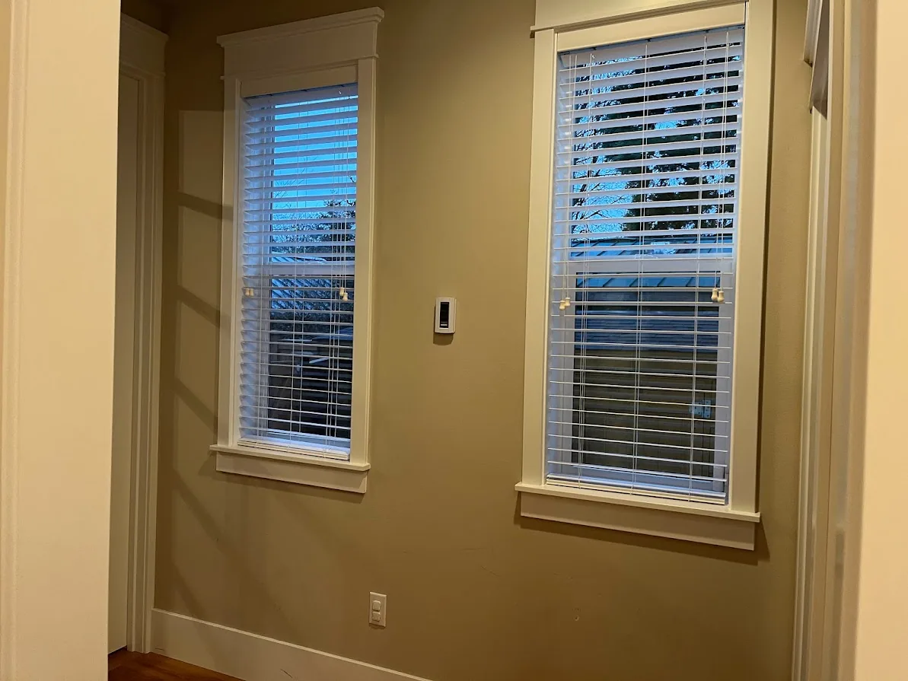
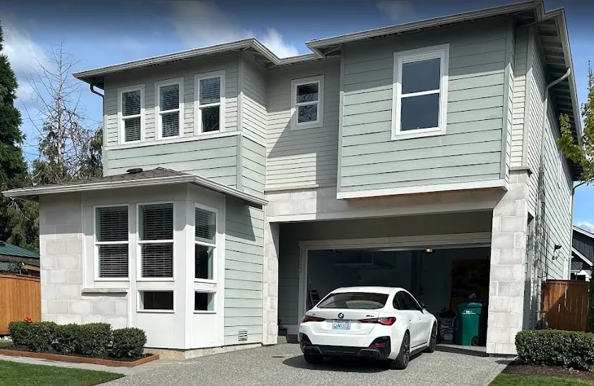

Windows
Good quality windows that are easy to maintain, clean. Stay standard size as much as possible. Something easy to get window treatments.
Front elevation study: the preferred farmhouse facade uses four narrow ground-front windows, six main-upper windows and two garage-upper facade windows, all with white trim and divided-light grids. This exterior-only pattern is not coordinated with furnished room openings or the interior window count below. The garage-upper shell is unassigned roof volume, not a new room or floor. Side/rear windows and interior trim stay unchanged. Reconcile front openings, structure, egress, cleaning access and selected products before ordering.
Whole-house window count — October 25, 2026
Garden-side door removal: replace the old combined dining door/stacked-window assembly with a standard 6 × 5 ft paired casement window, sill 3 ft. This remains one window opening with two casement units; the current 26-opening/48-unit count is unchanged. The relocated west dining door stays excluded from the window count.
Circled-window door correction: restore the living return bank to three 30 × 60 in units in its 90 in opening, x = 2.85-10.35. Replace the separate 6 ft-wide dining west paired-casement window with the 36 × 96 in patio door at (13.2, 3.95). Current furnished totals are 26 window openings, 48 units, 42 casements and 6 fixed pictures, excluding door glazing. These supersede earlier counts below. Safety glazing, header and selected door assembly need review.
Inset interior sills: ordinary white sills on both floors are now opening-width liners within the wall, not projecting stools or shelves. Nominal modeled liner depth is 1.5 inches; the room-side edge stops at the window frame datum, recessed behind the wall face. Surrounding Craftsman casing and aprons remain surface trim. The previously requested quartz kitchen plant ledge and pots remain an exception. Exterior weathering sills, openings and glazing are unchanged. Verify actual jamb/wall depth, flashing, condensation control and manufacturer installation details.
Markdown copy: house window count and counting rules.
29 window openings across both floors, containing 50 modeled window units: 44 operable casements and 6 fixed picture windows. Each three-unit kitchen/prep bank counts as one opening; the separate taller prep end casement remains. Joining the main-kitchen units removes two separate wall openings, not window units. Includes three high garage pictures, the single powder-room window and the earlier removal of the ground stairwell window. An opening is a wall/window group; a unit is one modeled casement or picture section. A paired casement counts as one opening and two units; the tall window beside the dining patio door has two stacked casements.
| Floor / room | Openings | Casement units | Picture units | Total units |
|---|---|---|---|---|
| Ground / living | 5 | 6 | 1 | 7 |
| Ground / dining, including patio-side window | 3 | 6 | 0 | 6 |
| Ground / main kitchen | 3 | 2 | 1 | 3 |
| Ground / prep kitchen | 2 | 3 | 1 | 4 |
| Ground / powder room | 1 | 1 | 0 | 1 |
| Ground / office | 2 | 4 | 0 | 4 |
| Ground / bedroom | 1 | 3 | 0 | 3 |
| Ground / garage | 3 | 0 | 3 | 3 |
| Ground-floor subtotal | 20 | 25 | 6 | 31 |
| Upstairs / primary bedroom | 2 | 4 | 0 | 4 |
| Upstairs / primary bath | 1 | 1 | 0 | 1 |
| Upstairs / bedroom 2 | 1 | 2 | 0 | 2 |
| Upstairs / bedroom 2 bath | 1 | 1 | 0 | 1 |
| Upstairs / loft | 2 | 4 | 0 | 4 |
| Upstairs / stairwell (former laundry) | 1 | 1 | 0 | 1 |
| Upstairs / bedroom 3 | 2 | 4 | 0 | 4 |
| Upstairs / bedroom 4 | 1 | 2 | 0 | 2 |
| Upstairs subtotal | 11 | 19 | 0 | 19 |
| Whole house | 31 | 44 | 6 | 50 |
Excluded: glass in entry/patio/office door leaves, the eight garage-door glazing panes, and nonexistent entry sidelights/transom. Basement rooms/windows and skylights are not modeled and are not included. Other ground-floor baths/closets and upstairs toilets/shared baths/closets/service rooms have no separate modeled room-window openings; absence from this study is not ventilation or egress approval.
The separate exterior visualization also has 31 concept window groups. These represent the same house, not additional windows, and other placeholder sizes/divisions are not fully reconciled with the furnished schedules (including the combined dining door/window assembly). Use the furnished schedules for this count. The 48 units are a model takeoff, not a supplier order: actual approved mulled assemblies, unit sizes, rough openings, safety glazing and egress remain to verify. Update this table and the consolidated window schedule whenever either floor changes.
Garage daylight above storage
Three nominal 72 × 18-inch fixed picture windows sit high on the east/outside wall at (55.5, 19.5), (55.5, 29.5) and (55.5, 39.5) ft. Sills are 90 inches and heads 108 inches above the lowered garage slab, equivalent to 75/93 inches above house datum. Fixed panes avoid high operating handles and outward sash conflicts. White interior casing and black exterior frames match the house. Keep storage below the casing and preserve the side pedestrian door. These are proposed envelopes, not verified standard units: confirm framing/header capacity, safety glazing, property-line/fire-separation limits, flashing, privacy and actual daylight before construction. See garage storage and access.
Powder-room daylight and privacy
One centered west-wall casement at (0, 38.05) ft now uses the taller Andersen 100 Series standard size 2640: minimum 2.5 × 4 ft opening, with bottom at 4 ft and top at 8 ft above the floor. The lower half stays frosted to 6 ft; upper half clear. Actual frame dimensions are approximately 2.4583 × 3.9583 ft per the 2024-25 manufacturer chart (dealer-hosted copy), with frame sill/head approximately 4.0208/7.9792 ft. Interior and exterior models distinguish the frame from the wall cut. Keep black outside/white inside, no decorative grilles. Standard dimensions are verified; the half-frosted product/treatment is not selected. Confirm sash clearance, safety glazing, installation allowances, weatherproofing and site/nighttime sightlines; provide a blind if needed. See the powder room.
Selected direction: Andersen 100 Series casements where operable and fixed picture windows where specified in the schedules, with Black exterior / White interior frames and white trim. Prefer standard catalog sizes, not custom units. Models are simplified, not manufacturer CAD: casements have white crank/lock hardware, picture windows have uninterrupted fixed glazing without cranks. Wide operable openings may use grouped or stacked casements. All listed openings are proposed envelopes, not confirmed units or rough openings. Verify combinations, handing, egress, safety glazing, framing, and hardware with the dealer/architect. The double front entry has no sidelights or transom; glazing within its leaves stays unchanged.
Manufacturer references: 100 Series casement product and sizing resources, Andersen Revit/BIM guidance and standard-size type catalogs, and 100 Series casement BIM model listing. No manufacturer model files have been imported into this preview.
Needs
Dining interior correction: the garden-facing casements now face their white interior frame, Craftsman trim and inset sill into the room, with black frames outside. The former reversed orientation exposed the black side indoors and hid the sill. Opening dimensions and inset-sill design remain unchanged.
Living-room window schedule — October 25, 2026
The living room is modeled at 13.2 × 17.7 ft with a 9 ft ceiling. Keep the two fireplace-side windows and join three 30 × 60-inch return-wall units edge-to-edge: casement / fixed picture / casement in one 90 × 60-inch opening, with one outer trim. There are now three wall openings containing seven modeled units (four fireplace casements, two return casements and one return picture). Dimensions below are proposed envelopes, not manufacturer unit sizes, rough openings, or clear-glass dimensions. Prefer standard Andersen 100 Series units, Black exterior / White interior, with white Craftsman casing; exact products remain unselected.
| ID / location | Opening W × H | Sill / head above floor | Model center (feet) | Concept division |
|---|---|---|---|---|
| F1 / fireplace, dining side | 48 × 64.8 in | 31.2 / 96 in | x = 0, z = 11.675 | Two equal casement bays |
| F2 / fireplace, stair side | 48 × 64.8 in | 31.2 / 96 in | x = 0, z = 23.275 | Two equal casement bays |
| S1 / return bank, left | 30 × 60 in | 36 / 96 in | x = 4.1, z = 8 | Single casement bay |
| S2 / return wall, center | 30 × 60 in | 36 / 96 in | x = 6.6, z = 8 | Fixed picture window; uninterrupted pane, no crank/lock |
| S3 / return bank, right | 30 × 60 in | 36 / 96 in | x = 9.1, z = 8 | Single casement bay |
Return-wall spacing: the joined opening spans x = 2.85-10.35 ft at 30-inch unit centers, with no wall piers or individual casing between units. Use one outer Craftsman surround, continuous header, sill and apron; retain narrow unit-frame mullions. Keep S2 centered at x = 6.6. Opening-to-corner returns are 34.2 inches to wall centerlines. The overall casing cap is 98.75 inches wide; header/mullion and braced-wall approval remain unresolved. Place the sconces at the two outer ends, x = 0.95 / 12.25 ft, 75.6 inches above the floor; no sconces between windows. Keep the opposite-wall pair and no lights on the fireplace.
Fireplace-wall centering: the visible span is z = 8.175-26.775 ft, from the finished dining-return face to the stair edge. Fireplace and window-pair midpoint are z = 17.475 ft. F1/F2 centers are 5.8 ft either side; their outer opening edges leave matching 18-inch returns at both ends. Furnished cutouts/frames, shared first-floor layout, and exterior west openings follow these positions. Window sizes, sill/head heights, wall endpoints, and footprint are unchanged; relocated openings still require structural review.
Trim and cabinet context: all window heads remain 8 ft high, 12 inches below the ceiling. Matching 3.5-inch side boards, 5.5-inch headers, beads, and caps raise the overall trim top to approximately 102.625 inches (5.375 inches below the ceiling). The joined return bank has only two outer side boards and one header/cap/sill/apron. Its apron ends at approximately 31.5 inches; chair backs stand about 4.8 inches off the projecting sill, so actual window reach needs review. Fireplace-window aprons end at approximately 26.7 inches; the right/dining-side 74.88-inch cabinet remains and the left/stair-side cabinet is removed for the piano, which screens part of that window. Retain projecting white sills/aprons, white sash/crank hardware, and Black exterior frames. Fireplace centering and room footprint stay unchanged.
Before ordering/framing: have the dealer and architect confirm standard units and approved combinations, mullions, actual rough openings, structural headers, corner/braced-wall capacity, safety glazing/egress, flashing/drainage, sash reach/swing, shade wiring, and sconce electrical boxes. The nominal 30-inch return-wall widths and fractional fireplace heights remain concept allowances, not confirmed catalog sizes. Other rooms' window heights are not globally changed.
Interior trim style: painted white, craftsman-inspired casing like the supplied reference. Use wide flat side boards, a deeper header with a small projecting cap and bead, and a projecting window sill with an apron below. The 3D concept uses provisional 3 1/2-inch side boards and 5 1/2-inch headers; final profiles, cabinet junctions, and dimensions need finish-carpentry coordination. Coordinate with the selected Black exterior/White interior window finishes; door leaves are unchanged.
Kitchen sink window and lighting schedule
The exterior window wall remains at z = 7 ft, between main-kitchen side boundaries x = 26.5 and 37.5. Keep the 54-inch fixed center pane and 18-inch casements, centered around the sink at x = 32. End sconces fit between finished wall faces and casing; actual units, framing and trim require builder/dealer review.
| Location / operation | Opening W × H | Center x (feet) | Sill / head above floor |
|---|---|---|---|
| Left / single casement | 18 × 42 in | 29 | 53 / 95 in |
| Center / fixed picture, one pane | 54 × 42 in | 32 | 53 / 95 in |
| Right / single casement | 18 × 42 in | 35 | 53 / 95 in |
Join the three units edge-to-edge like the prep bank, in one conceptual 90 × 42-inch opening spanning x = 28.25-35.75 ft. Each side moves 9 inches inward; the center pane and all unit sizes/heights stay unchanged. Remove the two wall piers, not the window-unit frames. One 1-inch-wide, 1/2-inch-thick white outer surround has a continuous 92 1/4-inch head and two side boards, with 1/8-inch reveals; no intermediate casing, projecting cap or apron remains. The rounded blue-gray sill is 93 1/4 W × 3 1/2 D × 3/4 H inches. Sconces recenter at x = 27.415625 / 36.584375 ft, y = 6.3. Retain three pots, with side pots offset clear of crank housings. Black exterior trim also surrounds one shared opening. The manufacturer must verify mull joints, assembled dimensions, rough opening, continuous header/pier removal, flashing, sill support and operation; this is not a selected or structurally approved assembly. No transoms or grilles are added.
Prep-kitchen windows
Join standard Andersen 100 Series 2050 / 5050 / 2050 units into one bank centered on the sink at (47.4, 7) ft. Actual frames remain 23 1/2, 59 1/2 and 23 1/2 inches wide, all 59 1/2 inches tall, with one continuous white outer casing and sill. Remove the two wall piers and individual casings; casement centers become x = 43.941667 / 50.858333 ft. Frame sills stay 41 1/4 inches and heads 100 3/4 inches. The sink picture remains uninterrupted. Combined frame width is 106 1/2 inches; the 107 × 60-inch modeled opening is a provisional allowance, not a verified factory-mulled rough opening. Individual standard sizes do not establish assembly or structural-header approval.
The end-wall casement at (55.5, 11.55) ft becomes standard 2060, the tallest standard single casement: 23 1/2 × 71 1/2-inch frame in a minimum 24 × 72-inch opening. Its frame sill is 29 1/4 inches, with the same 100 3/4-inch head. There is no counter below it. Counter-wall units use the tallest standard height fitting above the retained worktop and below the existing Craftsman caps; cap tops are about 107 3/8 inches beneath the 108-inch ceiling. Retain Black exterior / White interior frames and white trim.
Standard dimensions are verified against the casement chart and manufacturer product guide, picture/transom table. Minimum openings may need installation allowances. Reduce the matching ivory quartz backsplash to 4 inches and use thin counter-window sills without aprons; the four-appliance row moves 1.98 inches forward to clear the sills. Verify headers and available framing depth, corner bracing, flashing/drainage, glazing, moisture-resistant trim, tolerances, crank reach, outward sash clearance and ventilation with the dealer and architect. These are standard-size studies, not selected products or construction approval.
Many windows for a bright house with natural sunlight
Avoid custom size windows
Windows with windows sill
Windows with trim around them, inside and outside
Wired for automated shades.
Frosted windows in bathroom or walk in closet if they have windows.
Kids rooms do not have low windows
Pictures
Here’s the inside of our previous house’s windows, with trim around them.

Here’s the outside of our previous house’s windows, with trim around the upper level windows.
